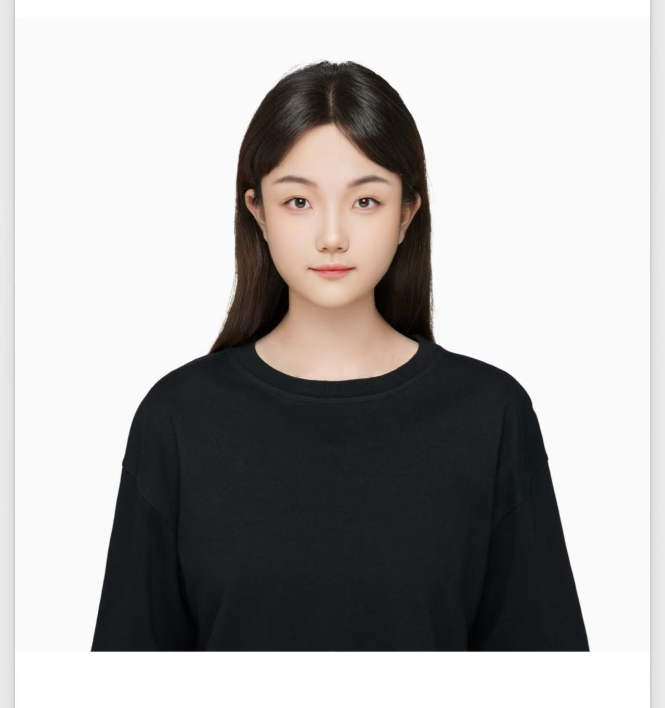

Morning coffee
Nothing beats a slow pour-over and a fresh notebook. My best ideas show up right after that first sip.

Hi, I'm Chenlu. I am a university student. I enjoy learning new things, working on interesting projects, and exploring different ideas.
A little peek into what makes me, well, me.
Nothing beats a slow pour-over and a fresh notebook. My best ideas show up right after that first sip.
From design history to generative art, I'm endlessly curious and always mid-way through three books.
Headphones on, feet on the dirt. It's where I untangle problems and remember that ideas need space to breathe.